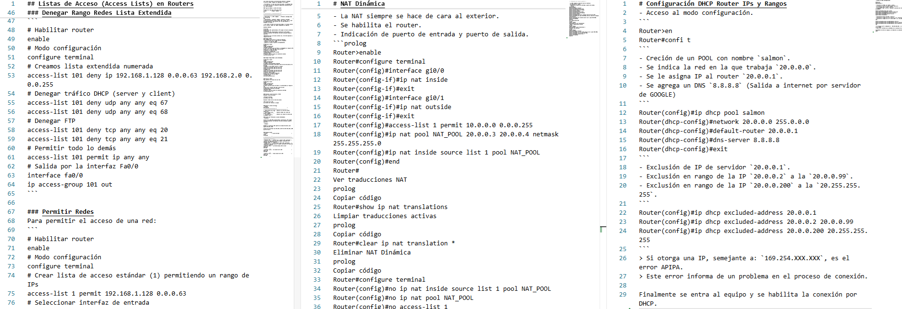

Actividad
Router & Switch Commands
Guía estructurada para dispositivos de red con ejemplos prácticos.

SSP (Secure Protocol)
Seguridad automatizada para servicios en Debian/Ubuntu.
git clone https://github.com/Nisamov/SSP.git
Información
Llevo años trasteando con ordenadores, siempre buscaba la forma de tener mi propio entorno, probar cosas y mejorarlas constantemente, eso es lo que me ha definido hasta la fecha.
Todos los proyectos que he hecho han sido remodelados, siendo mi mayor proyecto LinuxCommands, el cual es una enciclopedia de comandos de Linux, con ejemplos prácticos y explicaciones detalladas, lo recomiendo altamente para entornos educativos.